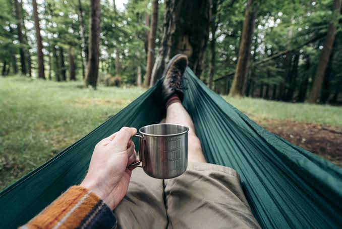

Nossa Proposta
O Café Brandalline é um espaço projetado especialmente para desenvolvedores, estudantes e entusiastas da tecnologia. Aqui você encontra internet de alta velocidade, tomadas em todas as mesas e, claro, cafés especiais criados para aumentar a sua produtividade.
Nosso Espaço

Ambiente climatizado e confortável para longas sessões de codificação.
Menu Executivo
Confira algumas de nossas opções temáticas:
- Café Expresso (Bug Fix): Forte, puro e focado.
- Capuccino Creamy (CSS): Perfeitamente estilizado e cremoso.
- Pão de queijo (Byte): Porção quentinha e crocante.
- Combo Full Stack: Um café grande acompanhado de uma fatia de bolo.
Onde Estamos
Venha codar com a gente! Para ver como chegar, clique no link abaixo: